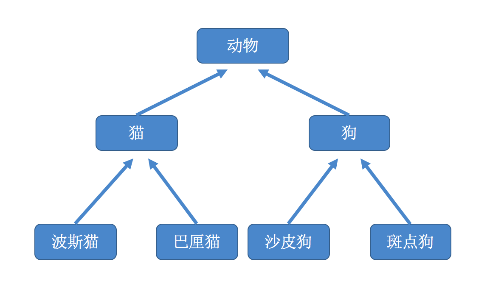
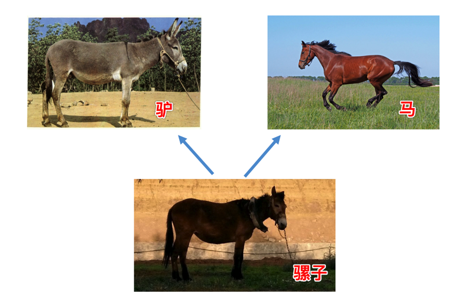

可以简单的理解为隐藏一切可以隐藏的实现细节，只向外界提供简单的编程接口。我们在类中定义的方法其实就是把数据和数据的操作封装起来了，在我们创建了对象之后，只需要给对象发送一个消息（调用方法）就可以执行方法中的代码，也就是说我们只需要知道方法的名字和传入的参数（方法的外部视图），而不需要知道方法内部的实现细节（方法的内部视图）。
练习：定义一个类实现一个数字数种
import time
class Clock:
def __init__(self):
# 获取当前系统时间
t = time.localtime()
self._hour = t.tm_hour
self._minute = t.tm_min
self._second = t.tm_sec
def run(self):
self._second += 1
if self._second == 60:
self._second = 0
self._minute += 1
if self._minute == 60:
self._minute = 0
self._hour += 1
if self._hour == 24:
self._hour = 0
def show(self):
return "%02d:%02d:%02d" % (self._hour, self._minute, self._second)
def main():
clock = Clock()
while True:
# 将光标退到当前行首
print("\r%s" % clock.show(), end="")
time.sleep(1)
clock.run()
if __name__ == '__main__':
main()在现实生活中，继承一般指的是子女继承父辈的财产，如下图
搞不好,结果如下..
在程序中继承是描述事物之间的所属关系，例如猫和狗都属于动物，程序中便可以描述为猫和狗继承自动物；同理，波斯猫和巴厘猫都继承自猫，而沙皮狗和斑点狗都继承自狗，如下如所示：

子类可以继承父类的公共属性和公共方法，父类中私有的属性和方法不能被继承。
一般只继承一个父类就叫做单继承，在java等静态语言中只能继承一个父类，也就不存在单继承和多继承了。
示例代码：
# 定义一个父类，如下:
class Cat(object):
def __init__(self, name, color="白色"):
self.name = name
self.color = color
def run(self):
print("%s--在跑"%self.name)
# 定义一个子类，继承Cat类如下:
class Bosi(Cat):
# 子类没有实现__init__方法，则自动调用父类的__init__方法
def setNewName(self, newName):
self.name = newName
def eat(self):
print("%s--在吃"%self.name)
bs = Bosi("印度猫")
print('bs的名字为:%s'%bs.name)
print('bs的颜色为:%s'%bs.color)
bs.eat()
bs.setNewName('波斯')
bs.run()
"""
输出结果：
bs的名字为:印度猫
bs的颜色为:白色
印度猫--在吃
波斯--在跑
"""
从图中能够看出，所谓多继承，即子类有多个父类，并且具有它们的特征。
多继承的格式如下：
# 定义一个父类
class A:
def printA(self):
print('----A----')
# 定义一个父类
class B:
def printB(self):
print('----B----')
# 定义一个子类，继承自A、B
class C(A,B):
def printC(self):
print('----C----')
obj_C = C()
obj_C.printA()
obj_C.printB()
"""
输出结果：
----A----
----B----
"""如果在上面的多继承例子中，如果父类A和父类B中，有一个同名的方法，那么通过子类去调用的时候，调用哪个？
class A:
def print(self):
print('----A----')
class B:
def print(self):
print('----B----')
# 定义一个子类，继承自A、B
class C(A,B):
pass
obj_C = C()
obj_C.print()
"""
输出结果：
----A----
"""事实上调用的顺序取决于C类先继承的是哪个类，先继承的类会先被调用。
也可通过__mor__查看C类的对象搜索方法时的先后顺序，接上面的代码
print(C.__mro__)
"""
输出结果：
(<class '__main__.C'>, <class '__main__.B'>, <class '__main__.A'>, <class 'object'>)
"""所谓重写，就是子类中，有一个和父类相同名字的方法，在子类中的方法会覆盖掉父类中同名的方法
class Cat:
def sayHello(self):
print("halou-----1")
class Bosi(Cat):
def sayHello(self):
print("halou-----2")
class Bali(Cat):
def sayHello(self):
print("halou-----3")
bosi = Bosi()
bali= Bali()
bosi.sayHello()
bali.sayHello()
"""
输出结果：
halou-----2
halou-----3
"""通过方法重写我们可以让父类的同一个行为在子类中拥有不同的实现版本，当我们调用这个经过子类重写的方法时，不同的子类对象会表现出不同的行为，这个就是多态（poly-morphism）。
class Cat:
def __init__(self,name):
self.name = name
class Bosi(Cat):
def __init__(self,name):
# 调用父类的__init__方法1(python2)
#Cat.__init__(self,name)
# 调用父类的__init__方法2
#super(Bosi,self).__init__(name)
# 调用父类的__init__方法3
super().__init__(name)
self.color = 'yellow'
def getName(self):
return self.name
bosi = Bosi('xiaohua')
print(bosi.name)
print(bosi.color)
"""
输出结果：
xiaohua
yellow
"""总结：
多态的概念是应用于Java和C#这一类强类型语言中，而Python崇尚“鸭子类型”。